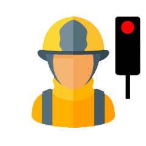

•{{datoActual$[0].nombre}} {{datoActual$[0].apellidoP}} {{datoActual$[0].apellidoM}} •
| Edad : {{brigadista.edad}} | ||
| Temperatura Ambiental: {{brigadista.t_ambiental}}°C | ||
| Temperatura Corporal: {{brigadista.t_corporal}}°C | ||
| Pulsaciones: {{brigadista.pulsaciones}} | ||
| Nivel de Fatiga: Bajo | Nivel de Fatiga: Medio | Nivel de Fatiga: Alto |

- 
-
Horas combatiendo:
XX:XX:XX